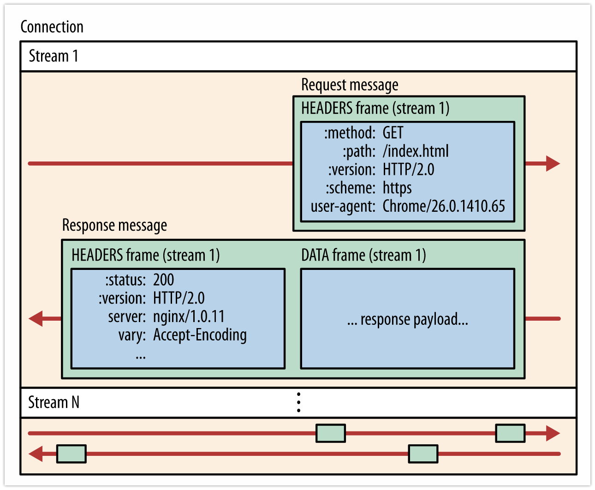
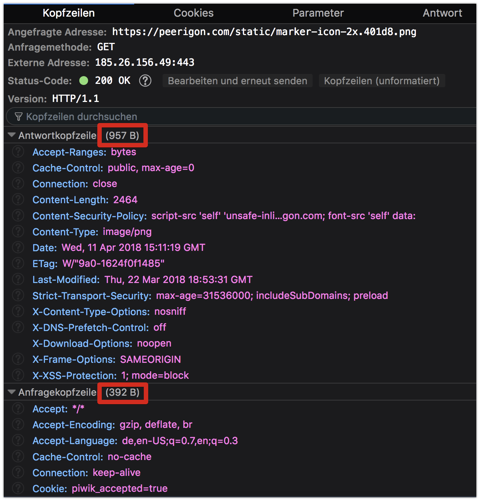

name: cover # HTTP/2 Michael Jaser<br> Peerigon GmbH<br> [@mmeaku](https://twitter.com/mmeaku) <img id="slide-cover-img" src="./assets/peerigon-logo.png" width="400"> --- layout: true class: theme-whiskey, slides-centered .slides-header[ HTTP ] --- class: slides-chapter ## Hypertext Transfer Protocol (HTTP) --- .slides-content[ <img src="assets/scooter.jpg" style="width: 500px" /> **Hyper Hyper** ] .slides-footnote[ Source: pitpony.photography - Eigenes Werk, CC BY-SA 3.0, https://commons.wikimedia.org/w/index.php?curid=47900133 ] --- .slides-content[ <img src="assets/Sir_Tim_Berners-Lee.jpg" style="width: 500px" /> **Tim Berners-Lee** ] .slides-footnote[ Source: Paul Clarke [CC BY-SA 4.0](https://creativecommons.org/licenses/by-sa/4.0), from Wikimedia Commons ] --- ### HTTP 0.9 .slides-content[ The first version of HTTP was releases in 1991 by Sir Tim Berners-Lee as a very simple text based protocol: - Client sends requests as a single ASCII line terminated by CRLF (carriage return) - Server responds with a byte stream of ASCII characters representing the HTML document - The connection closes when the transfer completes or fails ] --- .slides-label[Example] .slides-content[ <img src="assets/http-telnet-0.png" style="width: 30rem;" /> ] --- .slides-label[Example] .slides-content[ <img src="assets/http-telnet-1.png" style="width: 30rem"/> ] --- ### HTTP/1.0 .slides-content[ With the internet boom of the early 1990s HTTP was adopted quickly and HTTP/1.0 was standardized in May 1996 as RFC 1945. ] --- ### Major changes of HTTP/1.0 .slides-content[ - Request may contain multiple header fields separated by newline - Response is prefixed with a status (i.e. 200, 404, 500) - Response is not limited to hypertext anymore 🖼️ 🎶 🎬 ] --- ### HTTP/1.1 .slides-content[ Shortly after the publication of HTTP/1.0 the successor named HTTP/1.1 was defined as RFC 2068 and finally released as RFC 2616 in 1999. ] --- ### Major changes of HTTP/1.1 .slides-content[ - PATCH / LINK methods - Connection Keep-Alive - Chunked encoding transfer - Byte-range requests - Request pipelining [problems](https://stackoverflow.com/questions/30477476/why-is-pipelining-disabled-in-modern-browsers) - Responses can't be multiplexed - No possibility to prioritize things ] --- layout: true class: theme-whiskey, slides-centered .slides-header[ Motivation ] --- class: slides-chapter count: false ## Motivation for HTTP/2 --- ### Average website size: +300% in 5 years .slides-content[ <img src="./assets/website-size.png" style="width:60rem" /> ] .slides-footnote[ See https://httparchive.org/reports/page-weight ] --- ### Requests per domain .slides-content[ <img src="./assets/httparchive-domains-requests.png" style="width: 50rem" /> ] --- ### Waiting causes stress .slides-content[ <img src="./assets/mobile-delays-stress.png" style="width: 40rem" /> ] --- ### 💡 But .slides-content[ **We have more bandwith than 10 years ago!** Everyone should be able to download pages fast enough? ] --- <img src="./assets/rtt-bandwith.png" style="width: 60rem" /> .slides-footnote[ https://docs.google.com/a/chromium.org/viewer?a=v&pid=sites&srcid=Y2hyb21pdW0ub3JnfGRldnxneDoxMzcyOWI1N2I4YzI3NzE2 ] --- ### 💡 But .slides-content[ **We have fast connections and CDNs!** Everyone should be able to download pages fast enough? ] --- ### Recap: Latencies .slides-content[ <img src="./assets/latency-fixed.png" style="width: 30rem" /> <img src="./assets/latency-mobile.png" style="width: 30rem" /> ] --- ### How does this affect internet users worldwide? .slides-content[ <img src="./assets/internet_users_by_country.png" style="width: 50rem" /> ] --- ### But how about the US / Europe / ... .slides-content[ <img src="./assets/lte-connections.png" style="width: 50rem" /> ] --- ### Bandwidth doesn't matter (much) .slides-content[ - Latency is more important than bandwidth - Latency might be bad, even in highly developed countries - Roundtrips are expensive - See [Mike Belshe's Blog Post](https://docs.google.com/a/chromium.org/viewer?a=v&pid=sites&srcid=Y2hyb21pdW0ub3JnfGRldnxneDoxMzcyOWI1N2I4YzI3NzE2) ] --- layout: true class: theme-whiskey, slides-centered .slides-header[ HTTP/2 ] --- class: slides-chapter ## HTTP/2 --- ### HTTP/2 .slides-content[ - HTTP/1.1 was standardized in 1997 (20 years ago!) - The web changed a lot - Too many workarounds (i.e. domain sharding) - Started as SPDY (Google) - Standardized 2015 ] --- class: slides-chapter ## Features --- class: slides-chapter ## Binary Transport --- .slides-content[ <img src="assets/binary_framing_layer01.png" style="width: 40rem"/> ] .slides-footnote[ Source: https://developers.google.com/web/fundamentals/performance/http2/ ] --- .slides-content[  ] .slides-footnote[ Source: https://developers.google.com/web/fundamentals/performance/http2/ ] --- ### Binary transport .slides-content[ - Chunks of communication are called _frames_ - Frames belong to so-called _streams_ - Uses binary format instead of ASCII (HTTP 1.x) - Harder to inspect, but easier to implement and optimize ] --- class: slides-chapter ## Header Compression --- .slides-columns.slides-content[  .col[ - We use many headers - Headers are import for things like - cache control - security, - ... - _But_ headers are part of _every_ request/response ] ] --- ### .slides-label[Example] Average header size .slides-content[ - Request: 0.58 kB - Response: 0.41 kB - = 0,99 kB / Roundtrip - = 1kB * 80 requests (avg) - = __~80,0 kB__ of header data / website ] .slides-footnote[ Source: HTTP Archive, March 2016 ] --- ### Header compression .slides-content[ <img src="assets/header_compression.png" style="width: 28rem" /> ] .slides-footnote[ Source: https://developers.google.com/web/fundamentals/performance/http2/ ] --- class: slides-chapter ## Connection Multiplexing --- ### .slides-label.slides-danger[Problem 1] Head of line blocking (HOL) .slides-content.slides-columns[ <img src="./assets/http-max-connections.png" style="width: 30rem" /> .col[ - Max 6 concurrent connections per domain - Wait for response before dispatching next request - Workaround: Domain sharding i.e. img.peerigon.com ] ] --- ### .slides-label.slides-danger[Problem 2] TCP slow start .slides-content.slides-columns[ <img src="./assets/tcp-slow-start.png" style="width: 30rem" /> .col[ - Needed to avoid congestion - Start slow and grow until package loss - Every TCP connection goes through slow start - Despite available bandwidth! ] ] .slides-footnote[ Source: https://hpbn.co/building-blocks-of-tcp/#slow-start ] --- ### .slides-label.slides-success[Solution] A single connection + multiplexing .slides-content[ - Connections are expensive! - Goal: A single connections per origin - Requests are fully multiplexed - No more HOL → no more waiting - "Cheap" requests ] --- .slides-content[ <img src="./assets/newhttp1.png" style="width: 40rem" /> **HTTP/1.1** ] --- .slides-content[ <img src="./assets/newhttp2.png" style="width: 40rem" /> **HTTP/2** ] --- class: slides-chapter ## Stream Prioritization --- .slides-content[ <img src="assets/h2-prio.png" style="width: 50rem" /> **Stream Prioritization** ] --- class: slides-chapter ## Server Push --- layout: true class: theme-whiskey slides-centered --- .slides-content[ <img src="./assets/h2-push-message-example.png" style="width: 50rem; margin-left: auto; margin-right: auto;"/> **Server Push** ] .slides-footnote[ Source: https://jakearchibald.com/2017/h2-push-tougher-than-i-thought/ ] --- ```javascript const http2 = require('http2') const server = http2.createSecureServer( { cert, key }, onRequest ) function onRequest(req, res) { // Push files with index.html if (reqPath === '/index.html') { push(res.stream, 'bundle1.js') //<---------- push(res.stream, 'bundle2.js') //<---------- } } ``` --- ### Server Push .slides-content[ - Ability to provide data for the client in advance - E.g. if you request index.html, the server sends style.css too - Loaded only if the client approves (loads the ressource) - Not like websocket "push" - https://jakearchibald.com/2017/h2-push-tougher-than-i-thought/ ] --- class: slides-chapter ## Bonus: Encryption by default --- ### Encryption by default .slides-content[ - Not officially in the spec - Implemented as SSL-only by all Browsers - _Encrypt all the things!_ ] --- class: slides-chapter ## Summary --- <img src="./assets/h2-support.png" style="width: 55rem" /> -85% supported --- ### HTTP/2 vs. HTTP 1.x? .slides-content[ - HTTP/2 is ready to use! - HTTP/1 optimizations become antipatterns when upgrading to HTTP/2 - Sending multiple requests is not a big deal anymore (i.e. polling, REST) - The best way to optimize HTTP 1.x is upgrading to HTTP/2! ] --- ### Optimizing for HTTP/2 .slides-content[ - ~~Apply domain sharding~~ Minimize origins - ~~Bundle resources to reduce HTTP requests~~ Prefer separate requests - ~~Inline small resources~~ Consider seperate requests - Use server push to elmininate roundtrips - See https://hpbn.co/optimizing-application-delivery/#optimizing-for-http2 ] --- class: slides-chapter ## How to upgrade? --- ### Enable HTTP/2 for your webserver .slides-content[ - Apache [mod_http2](https://httpd.apache.org/docs/2.4/mod/mod_http2.html) - nginx [blog](https://www.nginx.com/blog/nginx-1-9-5/) ] --- ### Enable it with your provider .slides-content[ - [Uberspace (v7)](ttps://uberspace.de/) - [Zeit now](https://zeit.co/now) - [AWS](https://aws.amazon.com/de/about-aws/whats-new/2016/09/amazon-cloudfront-now-supports-http2/) ] --- ### Further ressources .slides-content[ - [High Performance Browser Networking Book](https://hpbn.co/) - https://developers.google.com/web/fundamentals/performance/why-performance-matters/ ] --- ## Thank you 👋